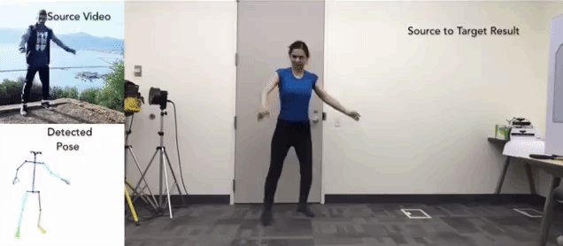
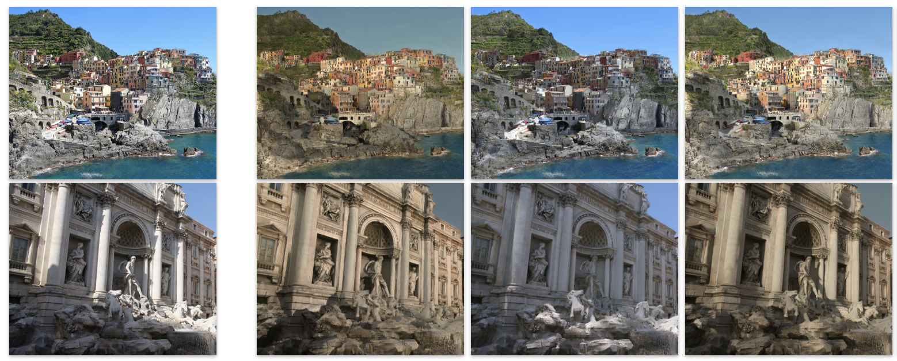
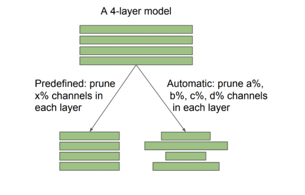
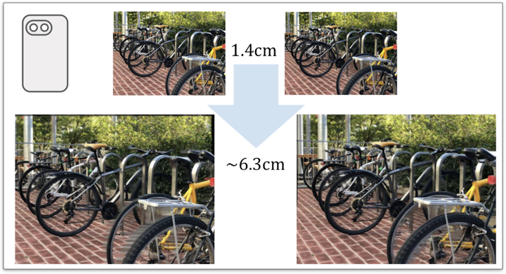
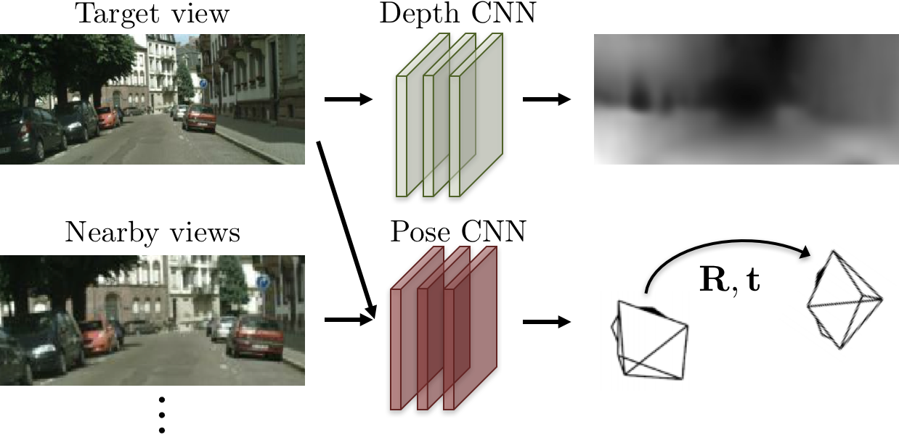
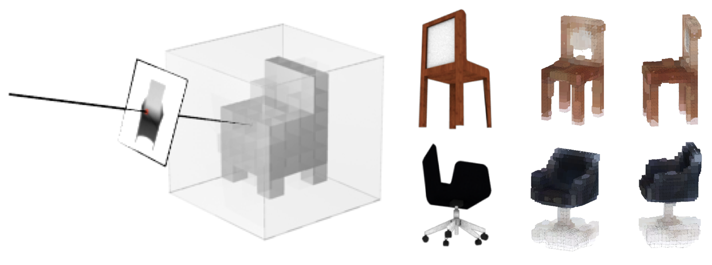
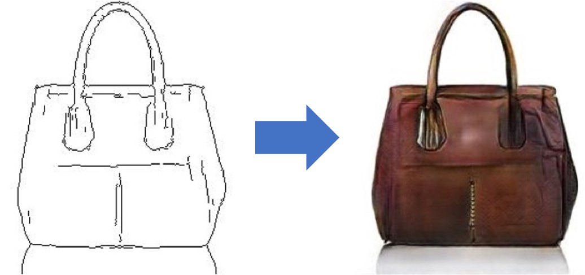
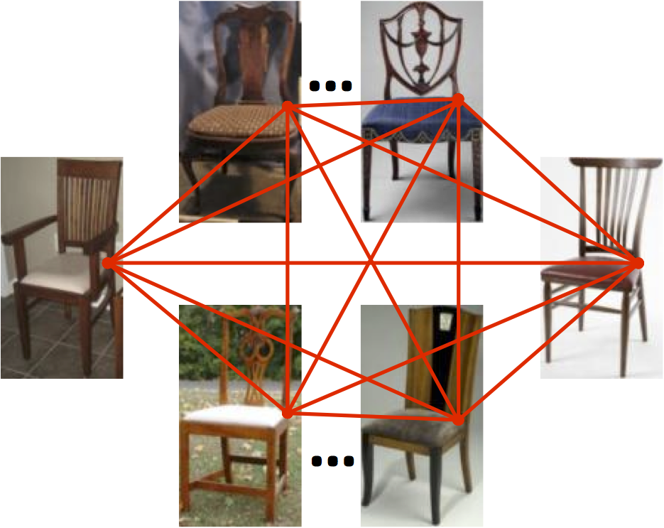
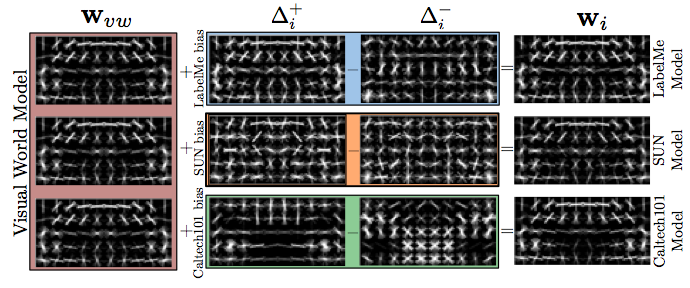
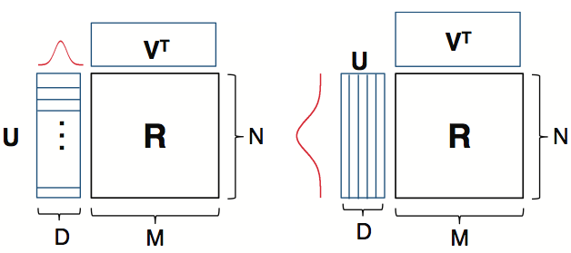

|
Tinghui Zhou Leading a 3D generative AI team at Roblox Ex-founder of Sway (acquired by Roblox) Ph.D. from UC Berkeley, advised by Alexei A. Efros Email: tzhou [at] roblox [dot] com [Google Scholar] [Github] |
Publications (not actively maintained...)

Everybody Dance Now
Caroline Chan , Shiry Ginosar, Tinghui Zhou Alexei A. Efros
In ICCV 2019
[Paper][Website][Video]

Multi-view Relighting Using a Geometry-Aware Network
Julien Philip , Michael Gharbi, Tinghui Zhou Alexei A. Efros George Drettakis
In SIGGRAPH 2019
[Paper][Website][Video]

Rethinking the Value of Network Pruning
Zhuang Liu , Mingjie Sun, Tinghui Zhou Gao Huang Trevor Darrell
In ICLR 2019 and NeurIPS 2018 Workshop on Compact Deep Neural Networks (Best Paper Award)
[Paper][Github]

Stereo Magnification: Learning View Synthesis using Multiplane Images
Tinghui Zhou, Richard Tucker, John Flynn, Graham Fyffe, Noah Snavely
In SIGGRAPH 2018
[Paper][Website][Github]

Unsupervised Learning of Depth and Ego-motion from Video
Tinghui Zhou,
Matthew Brown, Noah Snavely, David Lowe
In CVPR 2017 (Oral)
[Paper][Website][Github]

Multi-view Supervision for Single-view Reconstruction via Differentiable Ray Consistency
Shubham Tulsiani, Tinghui Zhou,
Alexei A. Efros, Jitendra Malik
In CVPR 2017 (Oral)
[Paper][Website][Github]

Image-to-Image Translation with Conditional Adversarial Nets
Phillip Isola, Jun-Yan Zhu, Tinghui Zhou, Alexei A. Efros
In CVPR 2017
[Paper][Website][Github]
View Synthesis by Appearance Flow
Tinghui Zhou,
Shubham Tulsiani,
Weilun Sun,
Jitendra Malik,
Alexei A. Efros
In ECCV 2016
[PDF][arXiv][Github]

Learning Dense Correspondence via 3D-guided Cycle Consistency
Tinghui Zhou,
Philipp Krähenbühl,
Mathieu Aubry,
Qixing Huang,
Alexei A. Efros
In CVPR 2016 (Oral)
[PDF][Project Page]

Learning Data-driven Reflectance Priors for Intrinsic Image Decomposition
Tinghui Zhou,
Philipp Krähenbühl,
Alexei A. Efros
In ICCV 2015
[PDF][Project Page]

FlowWeb: Joint Image Set Alignment by Weaving Consistent, Pixel-wise Correspondences
Tinghui Zhou,
Yong Jae Lee,
Stella X. Yu,
Alexei A. Efros
In CVPR 2015 (Oral)
[PDF][Project Page]

Undoing the Damage of Dataset Bias
Aditya Khosla,
Tinghui Zhou,
Tomasz Malisiewicz,
Alexei A. Efros,
Antonio Torralba
In ECCV 2012
[PDF][Project Page]

Kernelized Probabilistic Matrix Factorization: Exploiting Graphs and Side Information
Tinghui Zhou,
Hanhuai Shan,
Arindam Banerjee,
Guillermo Sapiro,
In SDM 2012 (Oral)
[PDF][Code]